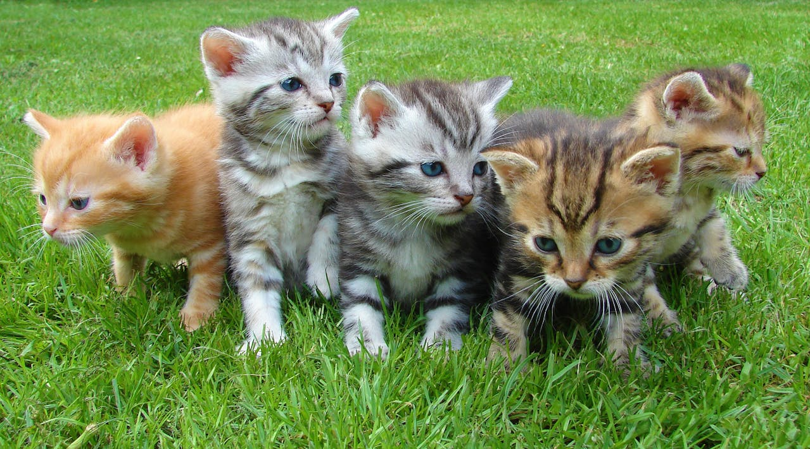
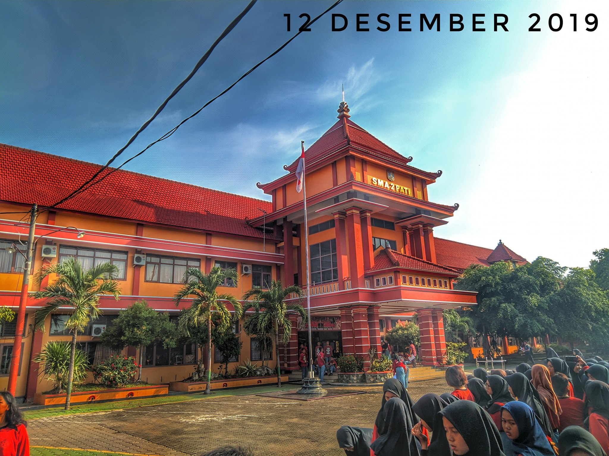
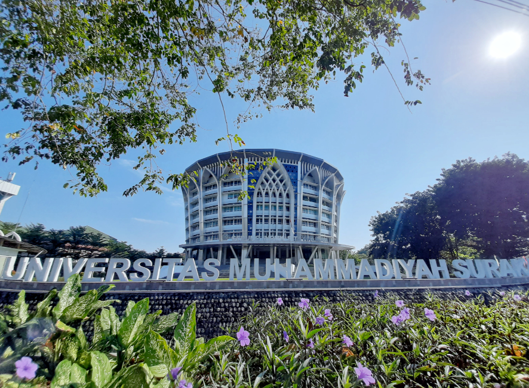

Hobi saya dalam memotret alam adalah sebuah jendela ke keindahan alam yang luar biasa. Setiap kali saya mengambil kamera dan berangkat ke luar untuk menjelajahi alam, saya merasa terhubung dengan keajaiban alam yang ada di sekitar kita. Saya menemukan keindahan dalam setiap detail, mulai dari panorama pegunungan yang megah hingga warna-warni senja yang mempesona. Memotret alam bukan hanya sekadar menangkap gambar, tetapi juga tentang merasakan dan menghargai keberadaan alam yang memukau.
Saat saya berada di alam terbuka, saya merasakan kedamaian yang sulit diungkapkan dengan kata-kata. Berada di tengah pepohonan yang hijau, mendengarkan suara gemericik air sungai, atau menyaksikan keindahan matahari terbenam adalah momen-momen yang memberi saya kedamaian batin dan kebahagiaan yang mendalam. Hobi memotret alam bukan hanya tentang menciptakan karya seni visual, tetapi juga tentang menghargai keajaiban alam dan melibatkan diri secara mendalam dengan lingkungan sekitar.

Kucing adalah hewan yang selalu membuat saya tersenyum dan merasa bahagia. Kelembutan dan kelucuan mereka membawa warna tersendiri dalam kehidupan sehari-hari. Saya selalu menikmati momen bersantai di rumah dengan kucing peliharaan saya, menonton mereka bermain dengan mainan atau sekadar tidur nyenyak di pangkuan saya. Keakraban yang terjalin antara saya dan kucing juga memberikan rasa kedekatan dan kehangatan yang sulit diungkapkan dengan kata-kata.
Ketika saya melihat kucing bermain atau melihat ke arah saya dengan tatapan lucu mereka, saya merasa dihargai dan diterima apa adanya. Kucing juga mengajarkan saya tentang kesabaran dan memahami kebutuhan makhluk hidup lain. Keterikatan emosional yang saya rasakan terhadap kucing telah memperkaya hidup saya dengan kebahagiaan dan cinta yang tak tergantikan.
Saya adalah siswa yang rajin selama masa sekolah saya, fokus pada pembelajaran di kelas dan berpartisipasi dalam kegiatan ekstrakurikuler lainnya. Salah satu pengalaman berharga saya adalah menjadi anggota tim sepak bola sekolah, di mana saya belajar tentang kerjasama, kepemimpinan, dan disiplin.
SMAN 2 PATI

Saya sangat menikmati pengalaman kuliah di SMA 2 Pati. Namun, seperti banyak institusi pendidikan lainnya di seluruh dunia, kami juga mengalami tantangan yang disebabkan oleh pandemi COVID-19. Hal ini memaksa kami untuk beralih ke pembelajaran daring sebagai cara untuk melanjutkan proses pendidikan. Meskipun demikian, meskipun ada kesulitan dalam beradaptasi dengan lingkungan pembelajaran baru, saya dan teman-teman sekelas tetap berusaha semaksimal mungkin untuk tetap aktif dan berpartisipasi dalam kegiatan pembelajaran.
Universitas Muhammadiyah Surakarta

Meskipun tantangan pandemi COVID-19 membuat awal semester agak berliku, namun di tengah gelombang itu, saya menemukan kilau kebaikan dari penggunaan teknologi dalam pembelajaran jarak jauh di Universitas Muhammadiyah Surakarta. Terutama dalam Program Studi Teknik Informatika, saya merasakan sentuhan inovatif yang memberikan dampak positif yang luar biasa.